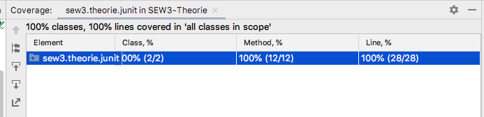
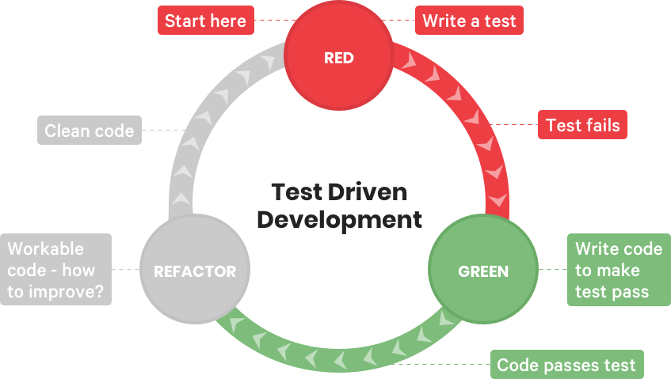

System.out.println("Ergebnis: " + MeineKlasse.meineMethode(""));
System.out.println("Ergebnis: " + meinObjekt.meineMethode(""));
@Test annotiert werden
@Test
public void getFirstName_single(){
}
assertEquals("test", //erwarter Wert
"TEst".toLowerCase(), //aktueller Wert - vom zu testenden Code
"Umwandlung in Kleinbuchstaben nicht korrekt."); //Nachricht (optional)
import org.junit.jupiter.api.Test;
import static org.junit.jupiter.api.Assertions.assertEquals;
class CalculatorTest {
@Test
void add_twoPositiveNumbers_returnsSum() {
Calculator calculator = new Calculator();
int result = calculator.add(3, 5);
assertEquals(8, result);
}
@Test
void add_twoNegativeNumbers_returnsSum() {
Calculator calculator = new Calculator();
int result = calculator.add(-3, -5);
assertEquals(-8, result);
}
}
Arrange → Act → Assert
Kannst du die Schritte in den Tests auf der vorherigen Folie erkennen?
Ein guter Name sagt: Was passiert, unter welcher Bedingung und mit welchem Ergebnis?
test1(),
testAdd(),
testMethod()
add_twoPositiveNumbers_returnsSum(),
withdraw_insufficientBalance_throwsException(),
findUser_unknownId_returnsEmptyOptional()
Merke: Teste nicht nur, wenn alles glattläuft.
Mit
assertThrows testen wir, ob eine erwartete Exception geworfen wird.
@Test
void divide_byZero_throwsArithmeticException() {
Calculator calculator = new Calculator();
assertThrows(
ArithmeticException.class, //erwartete Exception
() -> calculator.divide(10, 0) //Funktion, die den Code aufruft, der die Exception werfen soll
);
}
divide-Methode.
Wenn die gleiche Prüfung mit verschiedenen Werten wiederholt wird, hilft
@CsvSource.
@ParameterizedTest
@CsvSource({
"2, 3, 5",
"0, 5, 5",
"-2, 2, 0",
"-3, -4, -7"
})
void add_differentInputs_returnsExpectedSum(
int a, int b, int expected) {
assertEquals(expected, calculator.add(a, b));
}
Zusätzlich benötigt: Imports für ParameterizedTest und CsvSource aus JUnit Jupiter.
@BeforeEach läuft vor jedem Test und kann gemeinsame Vorbereitung übernehmen.
class CalculatorTest {
private Calculator calculator;
@BeforeEach
void setUp() {
calculator = new Calculator();
}
@Test
void add_returnsSum() {
assertEquals(8, calculator.add(3, 5));
}
}
Tipp: Nur wirklich gemeinsame Vorbereitung hier ablegen. Besondere Eingaben bleiben am besten im jeweiligen Test.
@BeforeAll: Einmal vor allen Tests der Testklasse ausgeführt
@BeforeEach: Vor jedem einzelnen Test ausgeführt
@AfterAll: Nach allen Tests der Testklasse ausgeführt
@AfterEach: Nach jedem einzelnen Test ausgeführt

wenige Tests
aufwändig
langsam
viele Tests
einfach
schnell
Testet das Gesamtsystem unter realen Bedingungen
Testet die Kombination mehrerer Units
Testet isoliert einzelne Units (häufig Klassen)
Viele Unit-Test: Einfach zu erstellen, decken viele mögliche Fehler breits ab.
Wenige End-to-End-Tests: Aufwändig zu erstellen, decken wenige Szenarien ab.

Je schneller Code entsteht, desto wichtiger ist schnelles, verlässliches Feedback.
TDD unterstützt die Kontrolle von generiertem Code, ersetzt sie aber nicht.